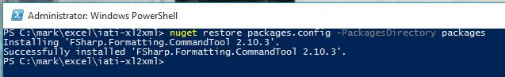
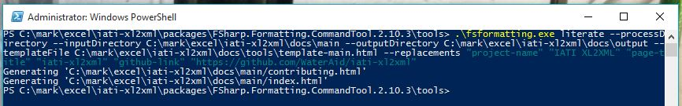

Contributing to the project
We welcome contributions to the project. We're not quite set up so you can just fork the project, pick an issue and send us a pull request so in the first instance please contact Mike Smith.
Once that's done or if you just want to poke around then you'll need to follow these steps:
- Clone the repo
- Install the NuGet command line. We use chocolatey to do this but your options are all here.
- Open a PowerShell window, and navigate to the local project directory. Restore the packages using the following command 
- For the time being we use this to generate the documentation.
Now you can do other things.
In order to run the documentation you must do this: . Here is the link to using the commandline tool.
Or in code: [lang=powershell]
1: 2: 3: 4: |
|